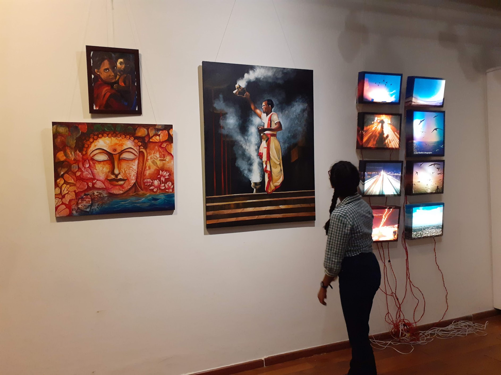
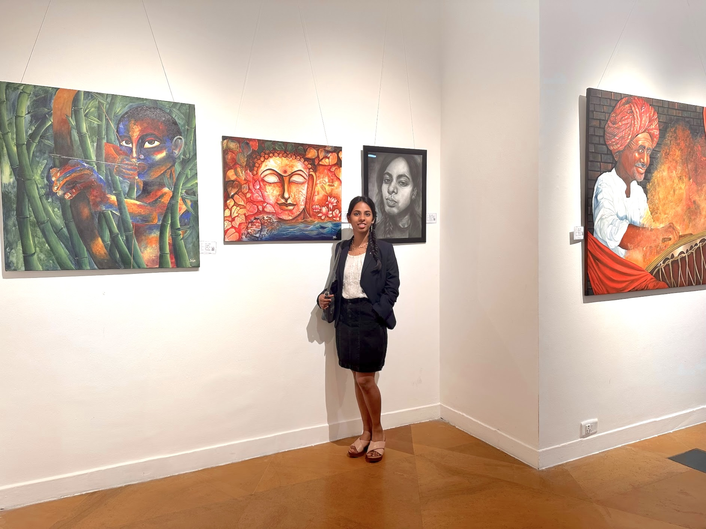
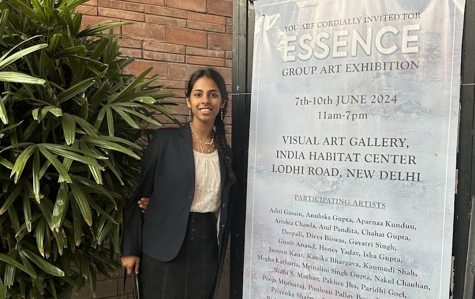
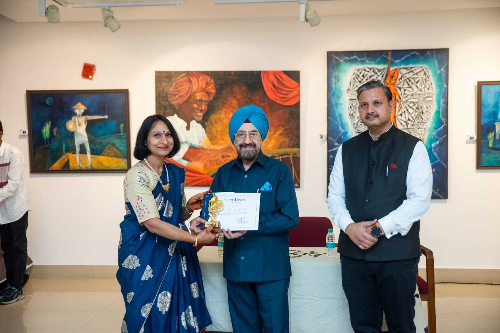
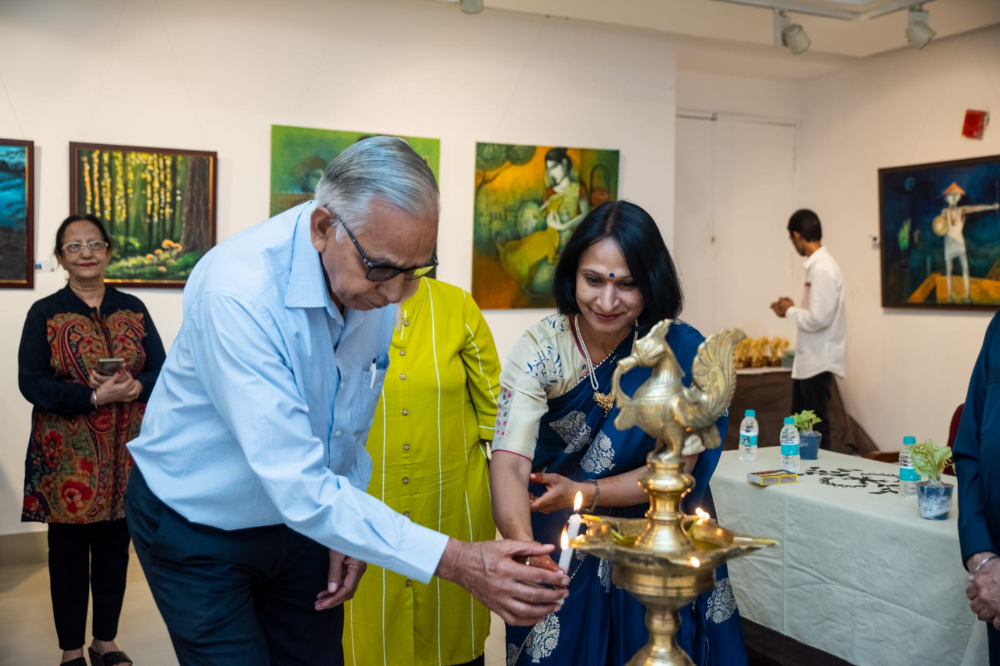

November 3rd, 2019
Inner Child
Stainless Steel Art Gallery, New Delhi
Group exhibition featuring works exploring memory, identity, and early creative influences.
Read moreArtwork by Isha
Art has been a part of my life for as long as I can remember. I grew up painting, experimenting with different mediums, and somewhere along the way, I began to understand just how powerful creativity can be. To me, art has always been a way of telling stories—a reminder that a picture really can say a thousand words.
This gallery brings together some of my most treasured works. Many are originals inspired by my travels, experiences, and the people I’ve met along the way, while others are studies of works by artists I admire, created as a way to practice, learn, and grow.
Some select
Explore the gallery
Past displays

November 3rd, 2019
Stainless Steel Art Gallery, New Delhi
Group exhibition featuring works exploring memory, identity, and early creative influences.
Read more

June 7th- 10th, 2024
Visual Art Gallery,India Habitat Center, New Delhi
A group exhibition centered on expressive visual storytelling across mediums and personal perspectives.
Read more

October 18th- 24th, 2024
All India Fine Arts and Crafts Society, Parliament Street, Delhi
An exhibition bringing together artists and visual practices at AIFACS in New Delhi.
Read more